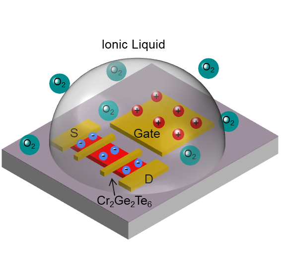
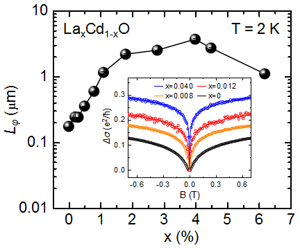

Journal Publications
 2018
2018

53. Probe of Spin Dynamics in Superconducting NbN Thin Films via Spin Pumping
Yunyan Yao, Qi Song, Yota Takamura, Juan Pedro Cascales, Wei Yuan, Yang Ma, Yu Yun, X. C. Xie, Jagadeesh S. Moodera, and Wei Han*
Physical Review B 97, 224414 (2018)
52. Dirac surface state–modulated spin dynamics in a ferrimagnetic insulator at room temperature
Chi Tang†, Qi Song†, Cui-Zu Chang, Yadong Xu, Yuichi Ohnuma, Mamoru Matsuo, Yawen Liu, Wei Yuan, Yunyan Yao, Jagadeesh S. Moodera, Sadamichi Maekawa, Wei Han and Jing Shi*
Science Advances 4:eaas8660 (2018)
51. Pressure-induced spin reorientation transition in layered ferromagnetic insulator Cr2Ge2Te6
Zhisheng Lin, Mark Lohmann, Zulfikhar A. Ali, Chi Tang, Junxue Li, Wenyu Xing, Jiangnan Zhong, Shuang Jia, Wei Han, Sinisa Coh, Ward Beyermann, and Jing Shi*
Physical Review Materials 2, 051004(R) (2018)

50. Quantum materials for spin and charge conversion
Wei Han*, YoshiChika Otani & Sadamichi Maekawa
npj Quantum Materials 3, 27 (2018)

49. Experimental signatures of spin superfluid ground state in canted antiferromagnet Cr2O3 via nonlocal spin transport
Wei Yuan, Qiong Zhu, Tang Su, Yunyan Yao, Wenyu Xing, Yangyang Chen, Yang Ma, Xi Lin, Jing Shi*, Ryuichi Shindou, X. C. Xie*, Wei Han*
Science Advances 4: eaat1098 (2018)
News Report by ICQM News Report by Peking University
48. Role of La doping for topological Hall effect in epitaxial EuO films
Yu Yun†, Yang Ma†, Tang Su, Wenyu Xing, Yangyang Chen, Yunyan Yao, Ranran Cai, Wei Yuan, and Wei Han*
Physical Review Materials 2, 034201 (2018)

47. Role of Oxygen in Ionic Liquid Gating on Two-Dimensional Cr2Ge2Te6: A Non-oxide Material
Yangyang Chen†, Wenyu Xing†, Xirui Wang†, Bowen Shen, Wei Yuan, Tang Su, Yang Ma, Yunyan Yao, Jiangnan Zhong, Yu Yun, X. C. Xie, Shuang Jia*, and Wei Han*
ACS Applied Materials & Interfaces 10(1), 1383-1388 (2018)
2017

46. Observation of long phase-coherence length in epitaxial La-doped CdO thin films
Yu Yun†, Yang Ma†, Songsheng Tao, Wenyu Xing, Yangyang Chen, Tang Su, Wei Yuan, Jian Wei, Xi Lin, Qian Niu, X. C. Xie, and Wei Han*
Physical Review B 96, 245310 (2017)
45. 自旋轨道转矩 (in Chinese)
王天宇，宋琪，韩伟
物理 46, 288-298(2017)

44. Electric field effect in multilayer Cr2Ge2Te6: a ferromagnetic 2D material
Wenyu Xing†, Yangyang Chen†, Patrick M Odenthal, Xiao Zhang, Wei Yuan, Tang Su, Qi Song, Tianyu Wang, Jiangnan Zhong, Shuang Jia, X C Xie, Yan Li, and Wei Han*
2D Materials 4, 024009 (2017)

43. Observation of inverse Edelstein effect in Rashba-split 2DEG between SrTiO3 and LaAlO3 at room temperature
Qi Song†, Hongrui Zhang†, Tang Su, Wei Yuan, Yangyang Chen, Wenyu Xing, Jing Shi*, Jirong Sun*, and Wei Han*
Science Advances 3, e1602312 (2017)
News Report by ICQM News Report by Peking University
42. Reversible Formation of 2D Electron Gas at the LaFeO3/SrTiO3 Interface via Control of Oxygen Vacancies
Pengfa Xu, Wei Han, Philip M. Rice, Jaewoo Jeong, Mahesh G. Samant, Katayoon Mohseni, Holger L. Meyerheim, Sergey Ostanin, Igor V. Maznichenko, Ingrid Mertig, Eberhard K. U. Gross, Arthur Ernst, Stuart S. P. Parkin*
Advanced Materials 29, 1604447 (2017)

41. Positive Exchange Bias between Permalloy and Twined Cr2O3 Films
Wei Yuan†, Tianyu Wang†, Tang Su, Qi Song, Wenyu Xing, Yangyang Chen, and Wei Han*
Journal of Magnetism and Magnetic Materials 422, 397–401 (2017)
2016

40. Spin injection and inverse Edelstein effect in the surface states of topological Kondo insulator SmB6
Qi Song, Jian Mi, Dan Zhao, Tang Su, Wei Yuan, Wenyu Xing, Yangyang Chen, Tianyu Wang, Tao Wu, Xian Hui Chen, X. C. Xie, Chi Zhang*, Jing Shi* & Wei Han*
Nature Communications, 7: 13485 (2016)
News Report by ICQM News Report by Peking University
39. Giant facet-dependent spin-orbit torque and spin Hall conductivity in the triangular antiferromagnet IrMn3
Weifeng Zhang†, Wei Han†, See-hun Yang, Yan Sun, Yang Zhang, Binghai Yan, Stuart S. P. Parkin*
Science Advances, 2: e1600759 (2016)
38. Crystal Structure Manipulation of the Exchange Bias in an Antiferromagnetic Film
Wei Yuan, Tang Su, Qi Song, Wenyu Xing, Yangyang Chen, Tianyu Wang, Zhangyuan Zhang, Xiumei Ma, Peng Gao, Jing Shi* and Wei Han*
Scientific Reports, 6:28397 (2016)
37. Experimental Investigation of Temperature-Dependent Gilbert Damping in Permalloy Thin Films
Yuelei Zhao†, Qi Song†, See-Hun Yang, Tang Su, Wei Yuan, Stuart S. P. Parkin, Jing Shi*, and Wei Han*
Scientific Reports, 6:22890 (2016)
36. Enhanced spin–orbit torques by oxygen incorporation in tungsten films
Kai-Uwe Demasius*, Timothy Phung*, Weifeng Zhang, Brian P. Hughes, See-Hun Yang, Andrew Kellock, Wei Han, Aakash Pushp & Stuart S.P. Parkin*
Nature Communications, 7:10644 (2016)
35. Magnetic anisotropy of the single-crystalline ferromagnetic insulator Cr2Ge2Te6
Xiao Zhang, Yuelei Zhao, Qi Song, Shuang Jia, Jing Shi, and Wei Han*
Japanese Journal of Applied Physics 55, 033001 (2016).
34. Perspectives for spintronics in 2D materials
Wei Han*
APL Materials, 4, 032401 (2016)
2015

33. Epitaxial growth and properties of La0.7Sr0.3MnO3 thin films with micrometer wide atomic terraces
Wei Yuan, Yuelei Zhao, Chi Tang, Tang Su, Qi Song, Jing Shi, and Wei Han*
Applied Physics Letters 107, 022404 (2015).
32. Role of transparency of platinum–ferromagnet interfaces in determining the intrinsic magnitude of the spin Hall effect
Weifeng Zhang†, Wei Han†, Xin Jiang, See-Hun Yang & Stuart S. P. Parkin*
Nature Physics 11, 496–502 (2015).
2014

31. Graphene spintronics
Wei Han, R. K. Kawakami*, Martin Gmitra, and Jaroslav Fabian*
Nature Nanotechnology 9, 794-807 (2014).
Pre 2014 （Before ICQM)

30. Giant magneto-electroluminescence from hybrid spin-organic spin organic light emitting diodes
Dali Sun, Tek Basel, Bhoj Gautam, Wei Han, Xin Jiang, Stuart S. P. Parkin, and Z. Valy Vardeny
Spin 04, 1450002 (2014).
29. Spin injection and detection in lanthanum- and niobium-doped SrTiO3 using the Hanle technique
Wei Han, Xin Jiang, Adam Kajdos, See-Hun Yang, Susanne Stemmer, Stuart S. P. Parkin
Nature Communications 4:2134 (2013).

28. A systematic approach to interpreting Hanle spin precession data in non-local spin valves
Adrian G Swartz, Kathleen M McCreary, Wei Han, Hua Wen, Roland K Kawakami
Proceedings of SPIE Vol. 8813, 881328, (2013).
27. Room-temperature magnetically modulated electroluminescence from hybrid organic/inorganic spintronics devices
Dali Sun, Tek Basel, Bhoj Gautam, Wei Han, Xin Jiang, Stuart S. P. Parkin, and Z. Valy Vardeny
Applied Physics Letters103, 042411 (2013).
26. Suppression of ionic liquid gate induced metallization of SrTiO3(001) by oxygen
Mingyang Li, Wei Han, Xin Jiang, Jaewoo Jeong, Mahesh Samant, Stuart S.P. Parkin
Nano Letters13, pp 4675–4678 (2013).

25. Integrating MBE materials with graphene to induce novel spin-based phenomena
Adrian G Swartz, Kathleen M McCreary, Wei Han, Jared J I Wong, Patrick M Odenthal, Hua Wen, Jen-Ru Chen, Roland K Kawakami, Yufeng Hao, Rodney S Ruoff, Jaroslav Fabian
Journal of vacuum science & technology B 31, 04D105 (2013).
24. Effect of in situ deposition of Mg adatoms on spin relaxation in graphene
Adrian G Swartz, Jen-Ru Chen, Kathleen M McCreary, Patrick M Odenthal, Wei Han, and Roland K Kawakami
Physical Review B 87, 075455 (2013).
23. Comparison of Spin Lifetimes in n-Ge Characterized between Three-Terminal and Four-Terminal Nonlocal Hanle Measurements
Li-Te Chang, Wei Han, Yi Zhou, Jianshi Tang, Michael Oehme, Inga A. Fischer, Joerg Schulze, Roland K. Kawakami, and Kang L. Wang
Semicond. Sci. Technol. 28, 015018 (2013).
22. Magnetic Moment Formation in Graphene Detected by Scattering of Pure Spin Currents
K. M. McCreary, Adrian G. Swartz, Wei Han, Jaroslav Fabian, Roland K. Kawakami
Physical Review Letters 109, 186604 (2012).
21. Electric Field Control of the Verwey Transition and Induced Magnetoelectric Effect in Magnetite
Jared J. I. Wong, Adrian G. Swartz, Renjing Zheng, Wei Han, Roland K. Kawakami
Physical Review B 86, 060409(R) (2012).
20. Spin Relaxation in Single Layer Graphene with Tunable Mobility
Wei Han, Jen-Ru Chen, Deqi Wang, Kathleen M. McCreary, Hua Wen, Adrian G. Swartz, Jing Shi, Roland K. Kawakami
Nano Letters 12, pp 3443–3447 (2012).

19. Spin Transport and Relaxation in Graphene
Wei Han, K. M. McCreary, K. Pi, W. H. Wang, Yan Li, H. Wen, J. R. Chen, R. K. Kawakami
Journal of Magnetism and Magnetic Materials 324, 369 (2012).

18. Enhanced spin injection efficiency and extended spin lifetimes in graphene spin valves
Wei Han, J. R. Chen, K. M. McCreary, H. Wen, R. K. Kawakami
Proceedings of SPIE Vol. 8100, 81000Q, (2011).
17. Electrical spin injection and transport in Germanium
Yi Zhou*, Wei Han*, Li-Te Chang, Faxian Xiu, Michael Oehme, Joerg Schulze, Roland. K. Kawakami, and Kang L. Wang
Physical Review B84, 125323 (2011).

16. Spin Relaxation in Single Layer and Bilayer Graphene
Wei Han, Roland Kawakami
Physical Review Letters107, 047207 (2011).

15. Tunneling Spin Injection into Single Layer Graphene
Wei Han, K. Pi, K. M. McCreary, Yan Li, Jared J. I. Wong, A. G. Swartz, and R. K. Kawakami,
Physical Review Letters 105, 167202 (2010).
14. Oscillatory spin polarization and magneto-optical Kerr effect in Fe3O4 thin films on GaAs(001)
Yan Li, Wei Han, A. G. Swartz, K. Pi, J. J. I. Wong, S. Mack, D. D. Awschalom, and R. K. Kawakami
Physical Review Letters 105, 167203 (2010).
13. Epitaxial EuO thin films on GaAs
A. G. Swartz, J. Ciraldo, J. J. I. Wong, Yan Li, Wei Han, Tao Lin, S. Mack, J. Shi, D. D. Awschalom, and R. K. Kawakami
Physical Review Letters 105, 167203 (2010).
12. Manipulation of Spin Transport in Graphene by Surface Chemical Doping
K. Pi, Wei Han, K. M. McCreary, A. G. Swartz, Yan Li, and R. K. Kawakami
Physical Review Letters 104, 187201;(2010)
11. Room-Temperature Electric-Field Controlled Ferromagnetism in Mn0.05Ge0.95 Quantum Dots
Faxian Xiu, Yong Wang, Jiyoung Kim, Pramey Upadhyaya, Yi Zhou, Xufeng Kou, Wei Han, R. K. Kawakami, Jin Zou;and Kang L. Wang
ACS Nano; 4;(8), pp 4948–4954 (2010).
10. Effect of cluster formation on graphene mobility
K. M. McCreary, K. Pi, A. G. Swartz, Wei Han, W. Bao, C. N. Lau, F. Guinea, M. I. Katsnelson, and R. K. Kawakami
Physical Review B; 81, 115453 (2010).
9. Tailoring interlayer exchange coupling of ferromagnetic films across MgO with Fe nanoclusters
Jared J. I. Wong, Luciana Ramirez, A. G. Swartz, A. Hoff, Wei Han, Yan Li, and R. K. Kawakami
Physical Review B; 81, 094406 (2010).

8. Investigating the origin of Fermi level pinning in Ge Schottky junctions using epitaxially grown ultrathin MgO films
Yi Zhou*, Wei Han*, Yong Wang, Faxian Xiu, Jin Zou, R.K. Kawakami, Kang L. Wang
Applied Physics Letters; 96, 102103 (2010).
7. Growth of single-crystalline, atomically smooth MgO films on Ge(001) by molecular beam epitaxy
Wei Han*, Yi Zhou*, Yong Wang, Yan Li, Jared. J. I. Wong, K. Pi, A.G. Swartz, K.M. McCreary, Faxian Xiu, Kang L. Wang, Jin Zou, and R.K. Kawakami
Journal of Crystal Growth, 312, 44 (2010).

6. Spin transport in graphite and graphene spin valves
Wei Han, K. Pi, W. H. Wang, K. M. McCreary, Yan Li, W. Bao, P. Wei, J. Shi, C. N. Lau, and R. K. Kawakami,
Proceedings of SPIE, Vol. 7398, 739819 (2009).

5. Electronic doping and scattering by transition metals on graphene
K. Pi, K. M. McCreary, W. Bao, Wei Han, Y. F. Chiang, Yan Li, S.-W. Tsai, C. N. Lau, and R. K. Kawakami
Physical Review B 80, 075406 (2009).
4. Engineering of tunnel junctions for prospective spin injection in germanium
Yi Zhou, Masaaki Ogawa, Mingqiang Bao, Wei Han, Roland K. Kawakami, and Kang L. Wang
Applied Physics Letters 94, 242104 (2009).
3. Electrical detection of spin precession in single layer graphene spin valves with transparent contacts
Wei Han, K. Pi, W. Bao, K. M. McCreary, Yan Li, W. H. Wang, C. N. Lau, and R. K. Kawakami
Applied Physics Letters 94, 222109 (2009).

2. Electron-Hole Asymmetry of Spin Injection and Transport in Single-Layer Graphene
Wei Han, W. H. Wang, K. Pi, K. M. McCreary, W. Bao, Yan Li, F. Miao, C. N. Lau, and R. K. Kawakami
Physical Review Letters102, 137205 (2009).